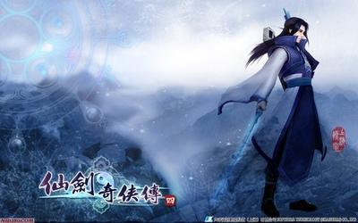

兴也勃焉，亡也勃焉，岂能不诚惶诚恐
创业即难，守业更难，怎能不竭尽全力
“珠峰”走到今天，我最引以为豪的就是：我们没有招生部门，但每年招收的学生人数倍增；我们没有就业部门，但超过百分之二、三十的学生入职BAT等一流公司
我们要时刻记着：“通过一门技术的学习，帮助学生树立信心信念，培养良好习惯和积极心态，达到引导人、激励人、提高人、改变人的目标.。”这是我们的价值观。
每天，我心里都有很强的恐慌感，因为我知道——兴亡只需片刻时间。我经常念叨：“其兴也勃焉，其亡也忽焉！”就是指兴盛与衰亡只需要很短的时间。其实“其兴也勃焉，其亡也忽焉”这句话不完整，完整的古文还给出了突然兴起和突然衰亡的原因，完整的古文是这样的：“禹汤罪已，其兴也勃焉；桀纣罪人，其亡也忽焉。”大禹和商汤（是两个朝代的开国之君）把过错都归罪于自己，结果很快就兴盛起来了；桀和纣王（两个亡国之君）总是把失误归罪于别人，结果很快就灭亡了
我们“珠峰”的制度很少很少，我的想法是让学生形成外部压力，促使我们成长，所以有考试制度和老师们上课受学生评估的制度。我们的出发点是好的，就是通过评估和考试发现问题并及时解决问题，因为有问题才是正常的，没有问题是不正常的。而考试制度，本身是刺激学生学习的制度。但是，最可怕的问题也是会出现的：一定会出现聪明的老师见招拆招。你既然考试，那我们就以考试题为导向讲题不就得了，结果五期的动画考试，大家考的都不错，可是知识点掌握的怎么样？我在后边还要上课呢，肯定有体会啊。第六期很多同学入学考试100分，后边的正式课的考试成绩也都不错，这里面是不是已经隐藏了什么秘籍！